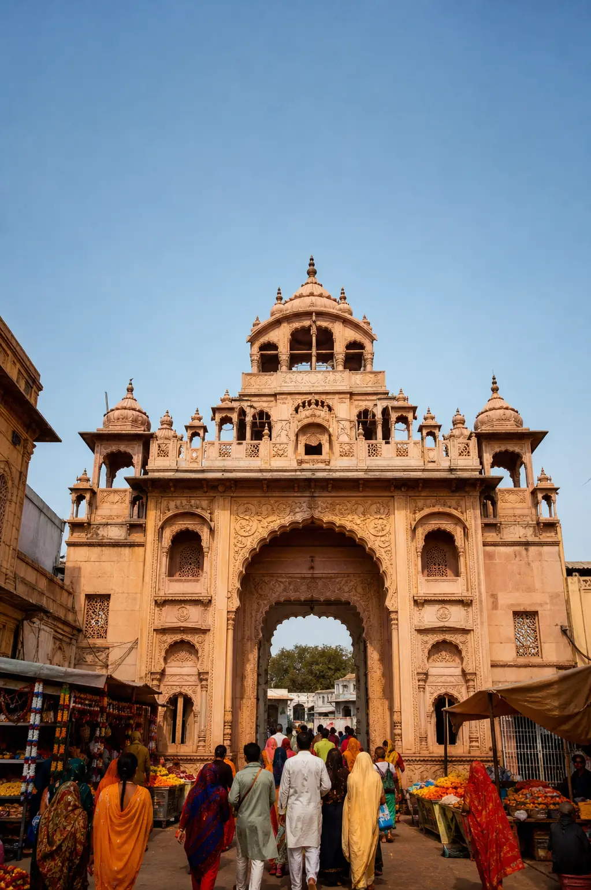
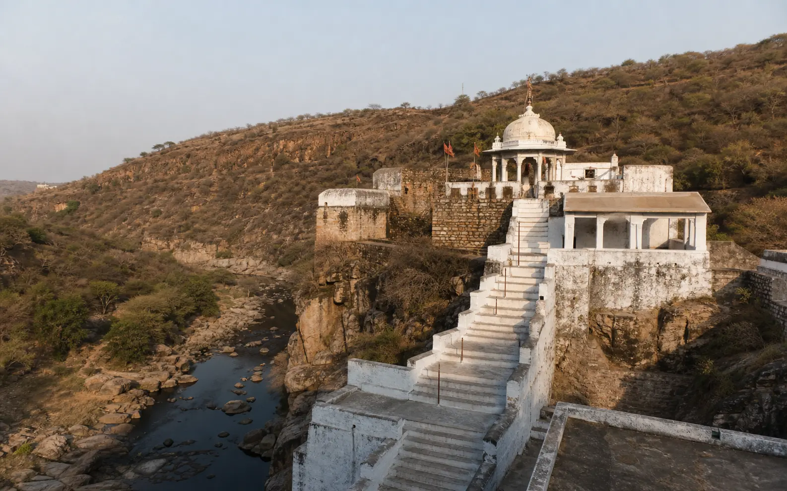

Stop 1 · 4:30–5:00 AM
Stop 1 · 4:30–5:00 AMPickup In Agra
From your hotel, home, Agra Cantt, Agra Fort station or Kheria Airport. The early start is not optional on this one — it is what makes two temples in a day possible at all.
Earliest start in the project350–380 KM Circuit
12–13 Hours · Waiting At Both Temples

This is the longest day we sell. Twelve to thirteen hours door to door, of which about eight are spent in the car, with two temple visits in between and a 4:30 am pickup at the front of it. Plenty of people do it and are glad they did — but it suits groups who are genuinely comfortable with an early start and a long drive. If anyone travelling with you would find that hard, take the two-day version with a night halt in Karauli. It costs a little more and turns the same yatra into a restful trip, and we would rather book you onto that than have you endure the one-day version.
350–380 KM
Round Trip From Agra
12–13 HRS
Door To Door, ~8 Hrs Driving
4:30 AM
Recommended Pickup
2
Temples, Driver Waits
Balaji first works best on most days — you arrive ahead of the heaviest crowd and Kaila Devi suits the afternoon. On some dates, and during Navratri, we advise the reverse. Tell us your date and we will recommend the sequence.
Stop 1 · 4:30–5:00 AMFrom your hotel, home, Agra Cantt, Agra Fort station or Kheria Airport. The early start is not optional on this one — it is what makes two temples in a day possible at all.
Earliest start in the project Stop 2 · 6:30 AM
Stop 2 · 6:30 AMBreakfast and a washroom break at a highway dhaba. Your driver suggests clean, family-suitable places — vegetarian food is easy to find the whole way round.
About 30 minutes Stop 3 · 7:30–8:00 AM
Stop 3 · 7:30–8:00 AMA Hanuman temple in Dausa district known across India. Your driver waits at the parking. Devotees traditionally do not carry prasad home from this temple — our drivers point out the customs for first-time visitors.
Darshan 2.5–3 hours Stop 4 · 11:00 AM
Stop 4 · 11:00 AMAbout two hours of driving through quieter country, with the lunch stop somewhere along it. Karauli is the town you pass through — a quiet place on the Kalisil river.
~2 hrs plus lunch
Stop 5 · 2:00 PMA major Shakti temple of eastern Rajasthan, on the Kalisil river. There is a walking stretch from the parking — longer during Navratri. Time at the ghat if the day allows, and an optional 30-minute Madan Mohan Ji stop at 4:15.
Darshan 1.5–2 hours Stop 6 · 5:00 PM
Stop 6 · 5:00 PMThe long leg home, with an evening tea break on the way. After two temples and a 4:30 start, this is the part everyone sleeps through.
Back in Agra 8:30–9:30 pmWe do not publish a starting price for this circuit. The one-day and two-day versions are different products, and the cab you pick changes both — so we quote per plan rather than post one number that fits neither.
| Cab Type | Seats | One-Day Tour | 2-Day, Night Halt In Karauli |
|---|---|---|---|
| AC Sedan (Dzire / Amaze) | 4 | Fare on WhatsApp | Fare on WhatsApp |
| AC SUV (Ertiga) | 6 | Fare on WhatsApp | Fare on WhatsApp |
| AC SUV (Innova Crysta) | 7 | Fare on WhatsApp | Fare on WhatsApp |
| Tempo Traveller | 12–15 | Fare on WhatsApp | Fare on WhatsApp |
The package fare covers fuel, driver charges, the driver’s full-day allowance and waiting at both temples within the booked tour day. On the two-day version the night allowance is included too. Tolls, Rajasthan state tax and parking at both temples are paid by you at actuals — we tell you the expected total on WhatsApp before you confirm. See the full Agra taxi fare list for the routes we do publish prices for.
Clear Fare Breakdown
One price for the whole circuit, agreed before you leave Agra.
The darshan order, the food stops and the timings come from doing it regularly, not from reading a map.
We go where you asked to go, and nowhere else unless you ask. Nobody gets taken to an emporium on the way home.
Darshan at your pace at each one, with nothing added at the end for the time it took.
Balaji first on most days, reversed on some and during Navratri. Tell us the date and we will say which.
Breaks planned around your comfort, the Innova Crysta suggested for elders, and an honest recommendation of the two-day version when it is the better fit.
Tolls, Rajasthan state tax and parking are estimated on WhatsApp before you confirm, not discovered on the road.
Same yatra, split over two days with a night halt in Karauli. The driver’s night allowance is inside the quoted fare; your own hotel and meals are not.
Agra to Mehandipur Balaji for an unhurried morning darshan, then on to Karauli — Madan Mohan Ji Temple and the City Palace if you want them — and a night halt in town.
A short morning run to Kaila Devi, darshan without watching the clock, and the drive back to Agra at a civilised hour.
This is the version we recommend for groups travelling with elderly members. Ask for the two-day fare on WhatsApp — and if you want either temple on its own instead, see Mehandipur Balaji or Kaila Devi.
Travel date, passenger count, pickup point, and whether you want the one-day or two-day version.
The full package fare in writing, including expected tolls, state tax and parking — plus our recommendation on the darshan order for your date.
Name, mobile number and car registration number before pickup — match the plate before boarding. No advance for most bookings.
Khatu Shyam Ji and Salasar Balaji are the usual additions, as a multi-day plan. Tell us the temples you have in mind and we will plan the route and quote one fixed fare.
Compare every Rajasthan route, or plan a multi-day yatra taking in Khatu Shyam Ji and Salasar Balaji.
One-day to multi-dayThe town on its own — Madan Mohan Ji Temple and the City Palace, with a Kaila Devi add-on.
Fare on WhatsAppEvery pilgrimage route we run, Braj and Rajasthan, in one place.
View pilgrimage routesLocal Agra Operator
Padma Shree Travels operates from Shamsabad, Agra, running local sightseeing, station and airport transfers, pilgrimage trips and outstation routes. Every pilgrimage route we run is listed on the temple tours hub, Braj and Rajasthan together.
Direct WhatsApp and phone support before and during your trip.
.jpg)
Yes. The full circuit is roughly 350 to 380 km and takes about 12 to 13 hours door to door with a 4:30 to 5:00 am start, of which about eight hours is spent in the car. It is a long day and it suits groups that are comfortable with a very early start. If that sounds like too much, the two-day version exists for exactly this reason.
On most days we recommend Mehandipur Balaji first — you arrive before the main crowd, and Kaila Devi suits the afternoon. On some days and during Navratri the reverse order works better, and we will advise the best sequence for your specific date when you message us.
Fuel, the driver, the driver’s full-day allowance, and waiting at both temples within the booked tour day. Tolls, Rajasthan state tax and parking at both temples are extra at actuals — we tell you the expected amounts on WhatsApp before you confirm, so the total cost is clear upfront.
Yes, a two-day version with a night halt in Karauli. Day one covers Balaji darshan and Karauli town; day two is an unhurried Kaila Devi darshan and the drive back. The driver’s night allowance is included in that fare. It is the version we recommend for groups travelling with elderly members.
Your driver suggests clean, family-suitable options: a highway dhaba for breakfast, lunch between Balaji and Karauli, and an evening tea stop on the return. Vegetarian food is easily available throughout the route.
The one-day version is about eight hours in the car with two temple visits, which is a lot for anyone. With the Innova Crysta and the planned breaks it is manageable, and many of our guests on this circuit do travel with parents and grandparents. If long days are difficult for anyone in your group, take the two-day version instead — it turns the same yatra into a restful trip.
Yes. During Chaitra Navratri, which is the Kaila Devi Fair, and again during Sharad Navratri, both temples see enormous crowds and roads near Kaila Devi are diverted. Book at least 3 to 5 days ahead for those dates and take the earliest possible start.
Yes. Popular extensions include Khatu Shyam Ji and Salasar Balaji as a multi-day plan. Tell us the temples you have in mind on WhatsApp and we will plan the route and quote one fixed fare.
The Hanuman temple on its own, approx. 110–120 km and 2.5–3 hrs each way.
Fare on WhatsAppThe Shakti temple on its own, 165–175 km, same day or two days.
Fare on WhatsAppMadan Mohan Ji Temple and the City Palace, with a Kaila Devi add-on.
Fare on WhatsAppThe Braj equivalent — three towns, 10–12 hours out of Agra.
₹3,500 full dayTaj Mahal, Agra Fort and Akbar’s Tomb — a full day in the city.
From ₹2,500Every route and package we run, with fares in one table.
All faresDriver waits at both temples. No commission stops.
Send your travel date and who is coming — we quote the package, recommend the darshan order for that date, and tell you honestly whether the one-day or two-day version suits your group.